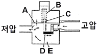
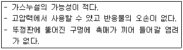
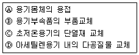
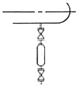
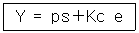
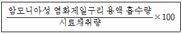

가스산업기사 (2015-09-19 기출문제)
1과목: 연소공학
1. 고압가스설비의 퍼지(purging)방법 중 한 쪽 개구부에 퍼지가스를 가하고 다른 개구부로 혼합가스를 대기 또는 스크러버로 빼내는 공정은?
- 진공퍼지(vacuum purging)
- 압력퍼지(pressure purging)
- 사이폰퍼지(siphon purging)
- 스위프퍼지(sweep-through pursing)
(정답률: 79%)

2. 메탄(CH4)에 대한 설명으로 옳은 것은?
- 고온에서 수증기와 작용하면 일산화탄소와 수소를 생성 한다.
- 공기 중 메탄성분이 60% 정도 함유되어 있는 혼합기체는 점화되면 폭발한다.
- 부취제와 메탄을 혼합하면 서로 반응한다.
- 조연성가스로서 유기화합물을 연소시킬 때 발생한다.
(정답률: 80%)
3. 다음 중 산소 공급원이 아닌 것은?
- 공기
- 산화제
- 환원제
- 자기연소성 물질
(정답률: 83%)
4. 연소에 대한 설명으로 옳지 않은 것은?
- 착화온도는 인화온도보다 항상 낮다.
- 인화온도가 낮을수록 위험성이 크다.
- 착화온도는 물질의 종류에 따라 다르다.
- 기체의 착화온도는 산소의 함유량에 따라 달라진다.
(정답률: 87%)
5. 메탄(CH4)의 기체 비중은 약 얼마인가?
- 0.55
- 0.65
- 0.75
- 0.85
(정답률: 75%)
6. 상온, 상압에서 프로판-공기의 가연성 혼합기체를 완전연소시킬 때 프로판 1kg을 연소시키기 위하여 공기는 약 몇 kg이 필요한가? (단, 공기 중 산소는 23.15wt%이다.)
- 13.6
- 15.7
- 17.3
- 19.2
(정답률: 61%)
7. 다음 중 폭발 범위가 가장 좁은 것은?
- 이황화탄소
- 부탄
- 프로판
- 시안화수소
(정답률: 80%)
8. 1atm, 27℃의 밀폐된 용기에 프로판과 산소가 1 : 5 부피비로 혼합되어 있다. 프로판이 완전연소하여 화염의 온도가 1000℃가 되었다면 용기 내에 발생하는 압력은?
- 1.95atm
- 2.95atm
- 3.95atm
- 4.95 atm
(정답률: 56%)
9. LPG 저장탱크의 배관이 파손되어 가스로 인한 화재가 발생하였을 때 안전관리자가 긴급차단장치를 조작하여 LPG 저장탱크로 부터의 LPG 공급을 차단하여 소화하는 방법은?
- 질식소화
- 억제소화
- 냉각소화
- 제거소화
(정답률: 86%)
10. 어떤 기체가 168kJ의 열을 흡수하면서 동시에 외부로부터 20kJ의 열을 받으면 내부에너지의 변화는 약 얼마인가?
- 20kJ
- 148kJ
- 168kJ
- 188 kJ
(정답률: 75%)
11. 프로판(C3H8)가스 1Sm3를 완전연소시켰을 대의 건조 연소가스량은 약 몇 Sm3인가? (단, 공기 중 산소의 농도는 21 vol%이다.)
- 19.8
- 21.8
- 23.8
- 25.8
(정답률: 40%)
12. 연소로(燃燒爐) 내의 폭발에 의한 과압을 안전하게 방출 시켜 노의 파손에 의한 피해를 최소화하기 위해 폭연벤트 (deflagration vent)를 설치한다. 이에 대한 설명으로 옳지 않은 것은?
- 가능한 한 곡절부에 설치한다.
- 과압으로 손쉽게 열리는 구조로 한다.
- 과압을 안전한 방향으로 방출시킬 수 있는 장소를 선택 한다.
- 크기와 수량은 노의 구조와 규모 등에 의해 결정한다.
(정답률: 82%)
13. 가연물의 위험성에 대한 설명으로 틀린 것은?
- 비등점이 낮으면 인화의 위험성이 높아진다.
- 파라핀 등 가연성 고체는 화제 시 가연성 액체가 되어 화재를 확대한다.
- 물과 혼합되기 쉬운 가연성 액체는 물과 혼합되면 증기압이 높아져 인화점이 낮아진다.
- 전기전도도가 낮은 인화성 액체는 유동이나 여과 시 정전기를 발생하기 쉽다.
(정답률: 66%)
14. 연소에 대한 설명으로 옳지 않은 것은?
- 열, 빛을 동반하는 발열반응이다.
- 반응에 의해 발생하는 열에너지가 반자발적으로 반응이 계속되는 현상이다.
- 활성물질에 의해 자발적으로 반응이 계속되는 현상이다.
- 분자 내 반응에 의해 열에너지를 발생하는 발열 분해 반응도 연소의 범주에 속한다.
(정답률: 66%)
15. 용기 내부에 공기 또는 불활성가스 등의 보호가스를 압입하여 용기 내의 압력이 유지됨으로써 외부로부터 폭발성가스 또는 증기가 침입하지 못하도록 한 방폭구조는?
- 내압방폭구조
- 압력방폭구조
- 유입방폭구조
- 안전증방폭구조
(정답률: 73%)
16. 공기와 연료의 혼합기체의 표시에 대한 설명 중 옳은 것은?
- 공기비(excess air ratio)는 연공비의 역수와 같다.
- 연공비(fuel air ratio)라 함은 가연 혼합기중의 공기와 연료의 질량비로 정의된다.
- 공연비(air fuel ratio)라 함은 가연 혼합기중의 연료와 공기의 질량비로 정의된다.
- 당량비(equivalence ratio)는 이론 연공비 대비 실제연공 비로 정의한다.
(정답률: 72%)
17. 석탄이나 목재가 연소 초기에 화염을 내면서 연소하는 형태는?
- 표면연소
- 분해연소
- 증발연소
- 확산연소
(정답률: 74%)
18. 연소가스량 10Nm3/kg, 비열 0.325kcal/Nm3·℃인 어떤 연료의 저위 발열량이 6700kcal/kg이었다면 이론 연소온도는 약 몇 ℃인가?
- 1962℃
- 2062℃
- 2162℃
- 2262 ℃
(정답률: 67%)
19. 자연발화(自然發火)의 원인으로 옳지 않은 것은?
- 건초의 발효열
- 활성탄의 흡수열
- 셀룰로이드의 분해열
- 불포화유지의 산화열
(정답률: 67%)
20. 발화지연시간(Ignition delay time)에 영향을 주는 요인으로 가장 거리가 먼 것은?
- 온도
- 압력
- 폭발하한 값
- 가연성가스의 농도
(정답률: 68%)
2과목: 가스설비
21. 20kg 용기(내용적 47L)를 3.1MPa 수압으로 내압시험 결과 내용적이 47.8L로 증가하였다. 영구(항구) 증가율은 얼마인가? (단, 압력을 제거하였을 때 내용적은 47.1L 이었다.)
- 8.3%
- 9.7%
- 11.4%
- 12.5%
(정답률: 56%)
22. LiBr - H2O 계 흡수식 냉동기에서 가열원으로서 가스가 사용되는 곳은?
- 증발기
- 흡수기
- 재생기
- 응축기
(정답률: 58%)
23. 용기내장형 LP가스 난방기용 압력조정기에 사용되는 다이어프램의 물성시험에 대한 설명으로 틀린 것은?
- 인장강도는 12MPa 이상인 것으로 한다.
- 인장응력은 3.0MPa 이상인 것으로 한다.
- 신장영구 늘음율은 20% 이하인 것으로 한다.
- 압축영구 줄음율은 30% 이하인 것으로 한다.
(정답률: 58%)
24. 배관의 부식과 그 방지에 대한 설명으로 옳은 것은?
- 매설되어 있는 배관에 있어서 일반적인 강관이 주철관보다 내식성이 좋다.
- 구상흑연 주철관의 인장강도는 강관과 거의 같지만 내식성은 강관보다 나쁘다.
- 전식이란 땅속으로 흐르는 전류가 배관으로 흘러 들어간 부분에 일어나는 전기적인 부식을 한다.
- 전식은 일반적으로 천공성 부식이 많다.
(정답률: 57%)
25. 안지름 10㎝의 파이프를 플랜지에 접속하였다. 이 파이프 내에 40kgf/cm2의 압력으로 볼트 1개에 걸리는 힘을 300kgf/cm2이하로 하고자 할 때 볼트의 수는 최소 몇 개 필요한가?
- 7개
- 11개
- 15개
- 19개
(정답률: 68%)
26. 다음 [그림]은 압력조정기의 기본 구조이다. 옳은 것으로만 나열된 것은?

- A : 다이아프램, B : 안전장치용 스프링
- B : 안전장치용 스프링, C : 압력조정용 스프링
- C : 압력조정용 스프링, D : 레버
- D : 레버, E : 감압실
(정답률: 79%)
27. 구형저장 탱크의 특징이 아닌 것은?
- 모양이 아름답다.
- 기초구조를 간단하게 할 수 있다.
- 동일 용량, 동일 압력의 경우 원통형 탱크보다 두께가 두껍다.
- 표면적이 다른 탱크보다 적으며 강도가 높다.
(정답률: 71%)
28. 다음 보기의 특징을 가진 오토클레이브는?

- 교반형
- 진탕형
- 회전형
- 가스교반형
(정답률: 63%)
29. 도시가스 정압기의 일반적인 설치 위치는?
- 입구밸브와 필터사이
- 필터와 출구밸브사이
- 차단용 바이패스 밸브 앞
- 유량조절용 바이패스 밸브 앞
(정답률: 70%)
30. 도시가스 공급방식에 의한 분류방법 중 저압공급 방식이란 어떤 압력을 뜻하는가?
- 0.1MPa 미만
- 0.5MPa 미만
- 1MPa 미만
- 0.1MPa 이상 1MPa미만
(정답률: 78%)
31. 도시가스 제조공정 중 가열방식에 의한 분류로 원료에 소량의 공기와 산소를 혼합하여 가스발생의 반응기에 넣어 원료의 일부를 연소시켜 그 열을 열원으로 이용하는 방식은?
- 지열식
- 부분연소식
- 축열식
- 외열식
(정답률: 84%)
32. 정압기의 유량특성에서 메인밸브의 열림(스트로그 리프트)과 유량의 관계를 말하는 유량특성에 해당되지 않는 것은?
- 직선형
- 2차형
- 3차형
- 평방근형
(정답률: 73%)
33. 배관 설비에 있어서 유속을 5m/s, 유량을 20m3/s 이라고 할 때 관경의 직경은?
- 175㎝
- 200㎝
- 225㎝
- 250㎝
(정답률: 65%)
34. 정류(Rectification)에 대한 설명으로 틀린 것은?
- 비점이 비슷한 혼합물의 분리에 효과적이다.
- 상층의 온도는 하층의 온도보다 높다.
- 환류비를 크게 하면 제품의 순도는 좋아진다.
- 포종탑에서는 액량이 거의 일정하므로 접촉효과가 우수 하다.
(정답률: 79%)
35. 시안화수소를 용기에 충전하는 경우 품질검사 시 합격 최저 순도는?
- 98%
- 98.5%
- 99%
- 99.5%
(정답률: 80%)
36. 왕복식 압축기의 특징에 대한 설명으로 틀린 것은?
- 기체의 비중에 영향이 없다.
- 압축하면 맥동이 생기기 쉽다.
- 원심형이어서 압축 효율이 낮다.
- 토출압력에 의한 용량 변화가 적다.
(정답률: 76%)
37. 고온, 고압 장치의 가스배관 플렌지 부분에서 수소가스가 누출되기 시작하였다. 누출원인으로 가장 거리가 먼 것은?
- 재료 부품이 적당하지 않았다.
- 수소 취성에 의한 균열이 발생하였다.
- 플렌지 부분의 가스켓이 불량하였다.
- 온도의 상승으로 이상 압력이 되었다.
(정답률: 61%)
38. 도시가스의 배관의 굴착으로 인하여 20m 이상 노출된 배관에 대하여 누출된 가스가 체류하기 쉬운 장소에 설치하는 가스누출경보기는 몇 m 마다 설치하여야 하는가?
- 10
- 20
- 30
- 50
(정답률: 69%)
39. 가스충전구가 왼나사 구조인 가스밸브는?
- 질소용기
- 엘피지용기
- 산소용기
- 암모니아 용기
(정답률: 71%)
40. 금속재료에 대한 충격시험의 주된 목적은?
- 피로도 측정
- 인성 측정
- 인장강도 측정
- 압축강도 측정
(정답률: 58%)
3과목: 가스안전관리
41. 다음 보기 중 용기 제조자의 수리범위에 해당하는 것을 모두 옳게 나열된 것은?

- Ⓐ, Ⓑ
- Ⓒ, Ⓓ
- Ⓐ, Ⓑ, Ⓒ
- Ⓐ, Ⓑ, Ⓒ, Ⓓ
(정답률: 73%)
42. 가연성가스와 공기혼합물의 점화원이 될 수 없는 것은?
- 정전기
- 단열압축
- 융해열
- 마찰
(정답률: 65%)
43. 고압가스특정제조시설에서 안전구역안의 고압가스설비는 그 외면으로부터 다른 안전구역 안에 있는 고압가스설비의 외면까지 몇 m 이상의 거리를 유지하여야 하는가?
- 10 m
- 20 m
- 30 m
- 50 m
(정답률: 52%)
44. 공기액화분리에 의한 산소와 질소 제조시설에 아세틸렌가스가 소량 혼입되었다. 이때 발생 가능한 현상으로 가장 유의하여야 할 사항은?
- 산소에 아세틸렌이 혼합되어 순도가 감소한다.
- 아세틸렌이 동결되어 파이프를 막고 밸브를 고장 낸다.
- 질소와 산소 분리 시 비점차이의 변화로 분리를 방해한 다.
- 응고되어 이동하다가 구리 등과 접촉하면 산소 중에서 폭발할 가능성이 있다.
(정답률: 80%)
45. 이동식 부탄연소기와 관련된 사고가 액화석유가스 사고의 약 10%수준으로 발생하고 있다. 이를 예방하기 위한 방법으로 가장 부적당한 것은?
- 연소기에 접합용기를 정확히 장착한 후 사용한다.
- 과도한 조리기구를 사용하지 않는다.
- 잔가스 사용을 위해 용기를 가열하지 않는다.
- 사용한 접합용기는 파손되지 않도록 조치한 후 버린다.
(정답률: 85%)
46. 다음 중 고압가스 충전용기 운반 시 운반책임자의 동승이 필요한 경우는? (단, 독성가스는 허용농도가 100만분의 200을 초과한 경우이다.)
- 독성압축가스 100m3 이상
- 독성액화가스 500kg 이상
- 가연성압축가스 100m3 이상
- 가연성액화가스 1000kg 이상
(정답률: 71%)
47. 독성가스 충전용기를 운반하는 차량의 경계표지 크기의 가로 치수는 차체 폭의 몇 % 이상으로 하는가?
- 5%
- 10%
- 20%
- 30%
(정답률: 57%)
48. 가연성 가스에 대한 정의로 옳은 것은?
- 폭발한계의 하한 20%이하, 폭발범위 상한과 하한의 차가 20% 이상인 것
- 폭발한계의 하한 20%이하, 폭발범위 상한과 하한의 차가 10% 이상인 것
- 폭발한계의 하한 10%이하, 폭발범위 상한과 하한의 차가 20% 이상인 것
- 폭발한계의 하한 10%이하, 폭발범위 상한과 하한의 차가 10% 이상인 것
(정답률: 79%)
49. 용기에 의한 액화석유가스 사용시설에서 용기보관실을 설치하여야 할 기준은?
- 용기 저장능력 50kg 초과
- 용기 저장능력 100kg 초과
- 용기 저장능력 300kg 초과
- 용기 저장능력 500kg 초과
(정답률: 68%)
50. 가스안전사고를 방지하기 위하여 내압시험압력이 25MPa인 일반가스용기에 가스를 충전할 때는 최고충전압력을 얼마로 하여야 하는가?
- 42MPa
- 25MPa
- 15MPa
- 12 MPa
(정답률: 60%)
51. 허가를 받아야 하는 사업에 해당되지 않는 자는?
- 압력조정기 제조사업을 하고자 하는 자
- LPG자동차 용기 충전사업을 하고자 하는 자
- 가스난방기용 용기 제조사업을 하고자 하는 자
- 도시가스용 보일러 제조사업을 하고자 하는 자
(정답률: 63%)
52. 고압가스용 용접용기제조의 기준에 대한 설명으로 틀린 것은?
- 용기동판의 최대 두께와 최소두께의 차이는 평균두께의 20% 이하로 한다.
- 용기의 재료는 탄소, 인 및 황의 함유량이 각각 0.33%, 0.04%, 0.⑤% 이하인 강으로 한다.
- 액화석유가스용 강제용기와 스커트 접속부의 안쪽 각도는 30도 이상으로 한다.
- 용기에는 그 용기의 부속품을 보호하기 위하여 프로텍트 또는 캡을 부착한다.
(정답률: 51%)
53. 고압가스 사업소에 설치하는 경계표지에 대한 설명으로 틀린 것은?
- 경계표지는 외부에서 보기 쉬운 곳에 게시한다.
- 사업소 내 시설 중 일부만이 같은 법의 적용을 받더라도 사업소 전체에 경계표지를 한다.
- 충전용기 및 잔가스 용기 보관장소는 각각 구획 또는 경계선에 따라 안전확보에 필요한 용기상태를 식별할 수 있도록 한다.
- 경계표지는 법의 적용을 받는 시설이란 것을 외부사람이 명확히 식별할 수 있어야 한다.
(정답률: 82%)
54. 냉장고 수리를 위하여 아세틸렌 용접작업 중 산소가 떨어지자 산소에 연결된 호스를 뽑아 얼마 남지 않은 것으로 생각되는 LPG용기에 연결하여 용접 토치에 불을 붙이자 LPG 용기가 폭발하였다. 그 원인으로 가장 가능성이 높을 것으로 예상되는 경우는?
- 용접열에 의한 폭발
- 호스 속의 산소 또는 아세틸렌이 역류되어 역화에 의한 폭발
- 아세틸렌과 LPG가 혼합된 후 반응에 의한 폭발
- 아세틸렌 불법 제조에 의한 아세틸렌 누출에 의한 폭발
(정답률: 80%)
55. 다음 그림은 LPG저장탱크의 최저부이다. 이는 어떤 기능을 하는가?

- 대량의 LPG가 유출되는 것을 방지한다.
- 일정압력 이상 시 압력을 낮춘다.
- LPG내의 수분 및 불순물을 제거한다.
- 화재 증에 의해 온도가 상승 시 긴급 차단한다.
(정답률: 76%)
56. 자동차 용기 충전시설에서 충전용 호스의 끝에 반드시 설치하여야 하는 것은?
- 긴급차단장치
- 가스누출경보기
- 정전기 제거장치
- 인터록 장치
(정답률: 81%)
57. 액화석유가스 저장탱크에 가스를 충전할 때 액체 부피가 내용적의 90%를 넘지 않도록 규제하는 가장 큰 이유는?
- 액체팽창으로 인한 탱크의 파열을 방지하기 위하여
- 온도상승으로 인한 탱크의 취약방지를 위하여
- 등적팽창으로 인한 온도상승 방지를 위하여
- 탱크내부의 부압(negative pressure)발생방지를 위하여
(정답률: 82%)
58. 액화석유가스가스집단공급시설의 점검기준에 대한 설명으로 옳은 것은?
- 충전용주관의 압력계는 매분기 1회 이상 국가표준 기본법에 따른 교정을 받은 압력계로 그 기능을 검사한다.
- 안전밸브는 매월 1회 이상 설정되는 압력이하의 압력에서 작동하도록 조정한다.
- 물분무장치, 살수장치와 소화전은 매월 1회 이상 작동상황을 점검한다.
- 집단공급시설 중 충전설비의 경우에는 매월 1회 이상 작동상황을 점검한다.
(정답률: 67%)
59. 용기의 각인 기호에 대해 잘못 나타낸 것은?
- V : 내용적
- W : 용기의 질량
- TP : 기밀시험압력
- FP : 최고충전압력
(정답률: 83%)
60. 다음 가스안전성평가기법 중 정성적 안전성 평가기법은?
- 체크리스트 기법
- 결함수 분석 기법
- 원인결과 분석 기법
- 작업자실수 분석 기법
(정답률: 86%)
4과목: 가스계측
61. 최대 유량이 10m3/h인 막식가스미터기를 설치하고 도시 가스를 사용하는 시설이 있다. 가스렌지 2.5m3/h를 1일 8 시간 사용하고 가스보일러 6m3/h를 1일 6시간 사용했을 경우 월 가스사용량은 약 몇 m3인가?(단,1개월은 31일이다.)
- 1570
- 1680
- 1736
- 1950
(정답률: 62%)
62. 가스는 분자량에 따라 다른 비중 값을 갖는다. 이 특성을 이용하는 가스분석기기는?
- 자기식 O2 분석기기
- 밀도식 CO2 분석기기
- 적외선식 가스분석기기
- 광화학 발광식 NOx 분석기기
(정답률: 74%)
63. 가스폭발 등 급속한 압력변화를 측정하는 데 가장 적합한 압력계는?
- 다이어프램 압력계
- 벨로우즈 압력계
- 부르동관 압력계
- 피에조 전기압력계
(정답률: 57%)
64. 직접적으로 자동제어가 가장 어려운 액면계는?
- 유리관식
- 부력검출식
- 부자식
- 압력검출식
(정답률: 65%)
65. 압력계의 부품으로 사용되는 다이어프램의 재질로서 가장 부적당한 것은?
- 고무
- 청동
- 스테인리스
- 주철
(정답률: 59%)
66. 오리피스 유량계는 어떤 형식의 유량계인가?
- 용적식
- 오벌식
- 면적식
- 차압식
(정답률: 71%)
67. 열전도형 진공계 중 필라멘트의 열전대로 측정하는 열전대 진공계의 측정 범위는?
- 10-5 ~ 10-3 torr
- 10-3 ~ 0.1 torr
- 10-3 ~ 1 torr
- 10~100 torr
(정답률: 73%)
68. 자동조정의 제어량에서 물리량의 종류가 다른 것은?
- 전압
- 위치
- 속도
- 압력
(정답률: 54%)
69. 습도에 대한 설명으로 틀린 것은?
- 상대습도는 포화증기량과 습가스 수증기와의 중량비이다.
- 절대습도는 습공기 1kg에 대한 수증기의 양과의 비율이다.
- 비교습도는 습공기의 절대습도와 포화증기의 절대습도와의 비이다.
- 온도가 상승하면 상대습도는 감소한다.
(정답률: 53%)
70. 전자밸브(solenoid valve)의 작동 원리는?
- 토출압력에 의한 작동
- 냉매의 과열도에 의한 작동
- 냉매 또는 유압에 의한 작동
- 전류의 자기작용에 의한 작동
(정답률: 83%)
71. 다음 보기에서 나타내는 제어동작은? (단, Y : 제어출력신호, ps : 전 시간에서의 제어 출력신호, Kc : 비례상수, e : 오차를 나타낸다.)

- O 동작
- D 동작
- I 동작
- P 동작
(정답률: 67%)
72. 가스미터 선정 시 고려할 사항으로 틀린 것은?
- 가스의 최대사용유량에 적합한 계량능력인 것을 선택 한다.
- 가스의 기밀성이 좋고 내구성이 큰 것을 선택한다.
- 사용 시 기차가 커서 정확하게 계량할 수 있는 것을 선택한다.
- 내열성, 내압성이 좋고 유지관리가 용이한 것을 선택 한다.
(정답률: 84%)
73. 메탄, 에틸알코올, 아세톤 등을 검지하고자 할 때 가장 적합한 검지법은?
- 시험지법
- 검지관법
- 흡광광도법
- 가연성 가스검출기법
(정답률: 54%)
74. 가스크로마토그래피에 사용되는 운반기체의 조건으로 가장 거리가 먼 것은?
- 순도가 높아야 한다.
- 비활성이어야 한다.
- 독성이 없어야 한다.
- 기체 확산을 최대로 할 수 있어야 한다.
(정답률: 73%)
75. 차압유량계의 특징에 대한 설명으로 틀린 것은?
- 액체, 기체, 스팀 등 거의 모든 유체의 유량 측정이 가능하다.
- 관로의 수축부가 있어야 하므로 압력손실이 비교적 높은 편이다.
- 정확도가 우수하고, 유량측정 범위가 넓다.
- 가동부가 없어 수명이 길고 내구성도 좋으나 마모에 의한 오차가 있다.
(정답률: 50%)
76. 가스미터의 원격계측(검침) 시스템에서 원격계측 방법으로 가장 거리가 먼 것은?
- 제트식
- 기계식
- 펄스식
- 전자식
(정답률: 74%)
77. 적외선분광분석법으로 분석이 가능한 가스는?
- N2
- CO2
- O2
- H2
(정답률: 57%)
78. 오르자트 분석기에 의한 배기가스의 성분을 계산하고자 한다. 아래 보기의 식은 어떤 가스의 함량 계산식인가?

- CO2
- CO
- O2
- N2
(정답률: 70%)
79. 어떤 잠수부가 바다에서 15m 아래 지점에서 작업을 하고 있다. 이 잠수부가 바닷물에 의해 받는 압력은 몇 kPa인가? (단, 해수의 비중은 1.025이다.)
- 46
- 102
- 151
- 252
(정답률: 57%)
80. 루트미터에서 회전자는 회전하고 있으나 미터의 지침이 작동하지 않는 고장의 형태로서 가장 옳은 것은?
- 부동
- 불통
- 기차불량
- 감도불량
(정답률: 76%)